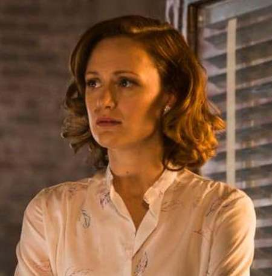
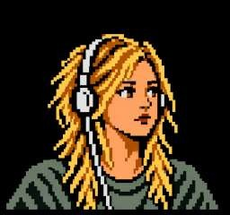

Joe MacMillan
Visionario, vendedor y estratega. Joe entiende la tecnología como una oportunidad para rediseñar el mercado y a sí mismo.
OPEN FILE
Visionario, vendedor y estratega. Joe entiende la tecnología como una oportunidad para rediseñar el mercado y a sí mismo.
OPEN FILEIngeniero brillante y contradictorio, obsesionado con construir algo que sobreviva a sus propios errores.
OPEN FILE

Hija menor de Gordon y Donna, programadora introvertida y curiosa que encuentra en la tecnología un espacio para construir su propia identidad.
OPEN FILE
Programadora prodigio, rebelde y ferozmente independiente; piensa el software como una extensión de su identidad.
OPEN FILE

Ingeniera y estratega que aprende a convertir experiencia técnica en liderazgo y visión empresarial.
OPEN FILE
Ejecutivo veterano que aporta experiencia, contactos y una sorprendente capacidad para adaptarse.
OPEN FILE
La hija de Gordon y Donna crece en un mundo donde la tecnología redefine también la vida familiar.
OPEN FILE